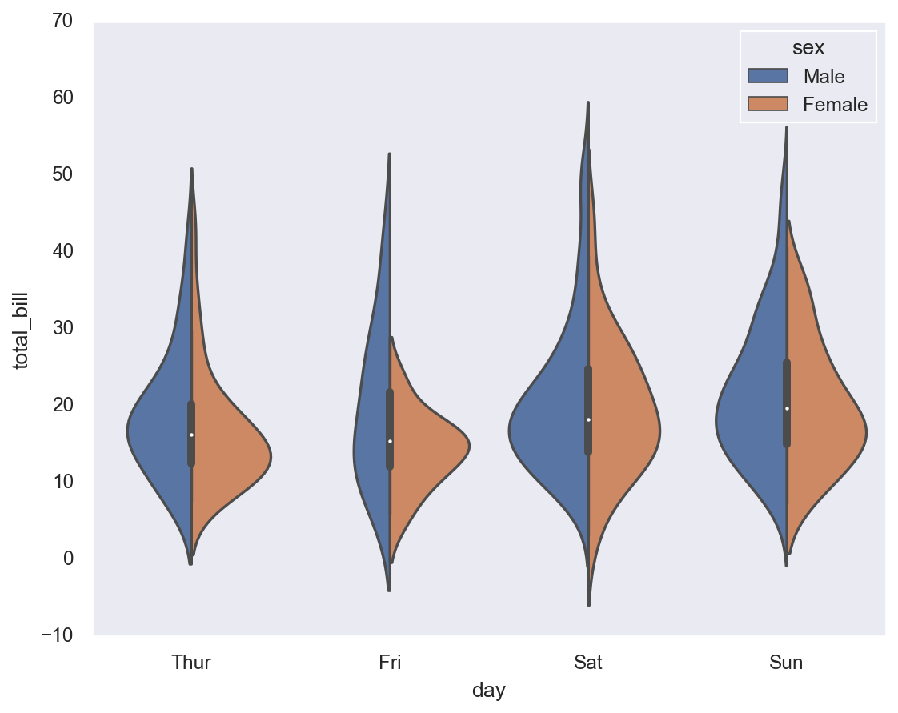

Code
import matplotlib.pyplot as plt
import numpy as np
import seaborn as sns
import pandas as pdThis page has information about data visualization, containing types of plots, use cases, and how to implement using various python libraries.
Importing libraries using the standard of the industry
import matplotlib.pyplot as plt
import numpy as np
import seaborn as sns
import pandas as pdfig, ax = plt.subplots() # Create a figure containing a single axes
ax.plot([1,2,3,4], [1,4,2,3]); # plot some data on the axes# linspace
# Return evenly spaced numbers over a specified interval.
# Returns num evenly spaced samples, calculated over the interval [start, stop].
#The endpoint of the interval can optionally be excluded.
x = np.linspace(0,5,11)
y = x**2
print(x)
print(y)
plt.plot(x,y,'rx')
plt.show()[0. 0.5 1. 1.5 2. 2.5 3. 3.5 4. 4.5 5. ]
[ 0. 0.25 1. 2.25 4. 6.25 9. 12.25 16. 20.25 25. ]plt.plot(x,y,'b.')
plt.show()plt.plot(x,y,'rs-')
plt.show()plt.plot(x,y,'yD:')
plt.show()plt.hist(x)
plt.show()plt.pie(x)
plt.show()plt.scatter(x,y)
plt.show()plt.boxplot(x)
plt.show()plt.subplot(1,2,1) # Chart 1
plt.plot(x,y,'r--')
plt.subplot(1,2,2) # Chart 2
plt.pie(y)
plt.show()plt.subplot(1,2,1) # 1 row, 2 columns, Ref 1
plt.plot(x,y,'r--')
plt.plot(y,x,'b:') # Keep sama reference, adding another line
plt.subplot(1,2,2) # Ref to plot #2
plt.pie(y)
plt.show()plt.subplot(2,1,1)
plt.plot(x,y,'r--')
plt.plot(y,x,'b:')
plt.subplot(2,1,2)
plt.pie(y)
plt.show()x1= np.linspace(0, 2*np.pi,400)
y1 = np.sin(x1**2)fig, ax1 = plt.subplots()
ax1.plot(x1,y1)
fig.show()C:\Users\carlj\AppData\Local\Temp\ipykernel_42696\2806661265.py:3: UserWarning:
Matplotlib is currently using module://matplotlib_inline.backend_inline, which is a non-GUI backend, so cannot show the figure.
fig = plt.figure() # Empty canvas (figure)
axes = fig.add_axes([0,0,0.5,0.5]) # Add axes
axes.plot(x,y,'b')
fig.show()C:\Users\carlj\AppData\Local\Temp\ipykernel_42696\3333502070.py:4: UserWarning:
Matplotlib is currently using module://matplotlib_inline.backend_inline, which is a non-GUI backend, so cannot show the figure.
fig = plt.figure()
axes = fig.add_axes([0.1,0.1,0.8,0.9]) # eje principal
axes2 = fig.add_axes([0.2,0.55,0.4,0.3]) # eje interior
# principal fig axes
axes.plot(x,y,'b')
# secondary fig axes2
axes2.plot(y,x,'r')
axes2.set_facecolor('lightgray')
fig.show()C:\Users\carlj\AppData\Local\Temp\ipykernel_42696\111565761.py:11: UserWarning:
Matplotlib is currently using module://matplotlib_inline.backend_inline, which is a non-GUI backend, so cannot show the figure.
fig, (ax1,ax2) = plt.subplots(1,2)fig, ax1 = plt.subplots()fig = plt.figure()
axes = fig.add_axes([0,0,0.5,0.5])
axes2 = fig.add_axes ([0.6,0,0.5,0.5])
axes3 = fig.add_axes ([0,-0.6,0.5,0.5])
axes4 = fig.add_axes ([0.6,-0.6,0.5,0.5])
axes.set_facecolor('green')
axes2.set_facecolor('blue')
axes3.set_facecolor('yellow')
axes4.set_facecolor('red')fig, axs = plt.subplots(2,2)
axs[0,0].set_facecolor('green')
axs[0,1].set_facecolor('yellow')
axs[1,0].set_facecolor('red')
axs[1,1].set_facecolor('purple')
fig.set_facecolor('gray')x=np.linspace(0,10,200)
y=np.sin(x)fig, axes = plt.subplots()
axes.plot(x,y,'r')
fig.show()C:\Users\carlj\AppData\Local\Temp\ipykernel_42696\4205225829.py:3: UserWarning:
Matplotlib is currently using module://matplotlib_inline.backend_inline, which is a non-GUI backend, so cannot show the figure.
fig, axes = plt.subplots(nrows=1, ncols=2)
axes[0].plot(x,y,'r')
axes[1].plot(y,x,'b')
fig.show()C:\Users\carlj\AppData\Local\Temp\ipykernel_42696\518181344.py:4: UserWarning:
Matplotlib is currently using module://matplotlib_inline.backend_inline, which is a non-GUI backend, so cannot show the figure.
fig, axes = plt.subplots(nrows=2, ncols=4)
axes[0,0].plot(x,np.cos(x),'r')
axes[0,1].plot(x,np.sin(x),'g')
axes[0,2].plot(x,np.tan(x),'y')
axes[0,3].plot(x,np.cos(x)**2,'b')
fig.tight_layout()
fig.show()C:\Users\carlj\AppData\Local\Temp\ipykernel_42696\4260253020.py:7: UserWarning:
Matplotlib is currently using module://matplotlib_inline.backend_inline, which is a non-GUI backend, so cannot show the figure.
fig, axes = plt.subplots(1,2, figsize=(8,5))
axes[0].plot(x,y)
axes[0].set_title('Relation X and Y')
axes[0].set_xlabel('X')
axes[0].set_ylabel('Y')
axes[1].plot(y,x)
axes[1].set_title('Relation Y and X')
axes[1].set_xlabel('Y')
axes[1].set_ylabel('X')
fig.show()C:\Users\carlj\AppData\Local\Temp\ipykernel_42696\256813773.py:12: UserWarning:
Matplotlib is currently using module://matplotlib_inline.backend_inline, which is a non-GUI backend, so cannot show the figure.
plt.plot(x,y,label='sin(x)')
plt.title('This is a title')
plt.xlabel('X')
plt.ylabel('Y')
plt.legend() # plt.legend(loc='lower right')
plt.show()x=np.linspace(0,10,10)
y=np.sin(x)print(plt.style.available)['Solarize_Light2', '_classic_test_patch', '_mpl-gallery', '_mpl-gallery-nogrid', 'bmh', 'classic', 'dark_background', 'fast', 'fivethirtyeight', 'ggplot', 'grayscale', 'seaborn', 'seaborn-bright', 'seaborn-colorblind', 'seaborn-dark', 'seaborn-dark-palette', 'seaborn-darkgrid', 'seaborn-deep', 'seaborn-muted', 'seaborn-notebook', 'seaborn-paper', 'seaborn-pastel', 'seaborn-poster', 'seaborn-talk', 'seaborn-ticks', 'seaborn-white', 'seaborn-whitegrid', 'tableau-colorblind10']plt.style.use('dark_background')fig, ax = plt.subplots()
ax.plot(x,x+1,'r--')
ax.plot(x,x+2,'b-')
ax.plot(x,x+3,'y.-')
ax.plot(x,x+4,'g:')fig, ax = plt.subplots()
ax.plot(x,x+1,color='red',linewidth=1, linestyle ='--')
ax.plot(x,x+2,color='blue', linewidth=2, marker ='8')
ax.plot(x,x+3,color='#FFCC22', marker='d')
ax.plot(x,x+4,color='#00FF00', alpha=0.5, linewidth=5, linestyle =':')plt.style.use('classic')
data = np.random.randint(1, 50, 100)country = ['USA', 'INDIA', 'JAPAN', 'CHILE', 'MEXICO']
population = [350, 1408, 125, 20, 126]#plt.bar(country,population)
plt.bar(country,population, width=0.5, color=['red','blue'])
plt.xticks (np.arange(5),('USA','India', 'Japan','Chile','Mexico'), rotation = 45)
plt.show()plt.barh(country,population)
plt.show()plt.hist(data,bins=20) # bins = 10 (default)
plt.show()plt.hist(data,bins=20, histtype='step')
plt.show()# Adding an outlier
data=np.append(data,200)
plt.boxplot(data, vert=False, patch_artist=True, notch=True, showfliers=True)
plt.show()N = 50
x = np.random.rand(N)
y = np.random.rand(N)
area = (30* np.random.rand(N))**2
colors = np.random.rand(N)
plt.scatter(x,y, s=area, c=colors, marker='p', alpha=0.5)
plt.show()import seaborn as snssns.barplot(x=['A','B','C'], y=[1,2,3])
plt.show()sns.set(style='dark', palette='deep')
sns.barplot(x=['A','B','C'], y=[1,2,3])
plt.show()tips = sns.load_dataset('tips')
tips.head()| total_bill | tip | sex | smoker | day | time | size | |
|---|---|---|---|---|---|---|---|
| 0 | 16.99 | 1.01 | Female | No | Sun | Dinner | 2 |
| 1 | 10.34 | 1.66 | Male | No | Sun | Dinner | 3 |
| 2 | 21.01 | 3.50 | Male | No | Sun | Dinner | 3 |
| 3 | 23.68 | 3.31 | Male | No | Sun | Dinner | 2 |
| 4 | 24.59 | 3.61 | Female | No | Sun | Dinner | 4 |
sns.displot(data=tips, x='total_bill')
plt.show()sns.displot(data=tips, x='total_bill', y='tip')
plt.show()sns.displot(data=tips, x='total_bill', y='tip', hue = 'sex')
plt.show()sns.displot(data=tips, x='total_bill', hue = 'sex')
plt.show()sns.displot(data=tips, x='total_bill', hue = 'sex', kind='kde')
plt.show()sns.histplot(data=tips, x='tip', bins =15, cumulative = False, hue='sex',
stat='probability', multiple='dodge') # multiple: stack, dodge, fill
plt.show()sns.kdeplot(data=tips, x='tip',hue='sex')
plt.show()sns.kdeplot(data=tips, x='tip',hue='sex', cumulative = True)
plt.show()sns.kdeplot(data=tips, x='tip',hue='sex', cumulative = False, fill=True)
plt.show()
sns.kdeplot(data=tips, x='tip',hue='sex', cumulative = False, fill=True)
plt.show()sns.countplot(data=tips, x='day',hue='sex')
plt.show()sns.countplot(data=tips, y='day',hue='sex')
plt.show()sns.stripplot(data=tips, x='day', y='total_bill', hue='sex')
plt.show()sns.stripplot(data=tips, x='day', y='total_bill', hue='sex', dodge=True)
plt.show()sns.swarmplot(data=tips, x='day', y='total_bill', hue='sex', dodge=True)
plt.show()
sns.boxplot(data=tips, x='day', y='total_bill', hue='sex', dodge=True)
plt.show()sns.swarmplot(data=tips, x='day', y='total_bill', hue='sex', dodge=True , color="0")
sns.boxplot(data=tips, x='day', y='total_bill', hue='sex', dodge=True)
plt.show()sns.violinplot(data=tips, x='day', y='total_bill', hue='sex', dodge=True)
plt.show()sns.violinplot(data=tips, x='day', y='total_bill', hue='sex', split=True, dodge=True)
plt.show()
sns.catplot(data=tips, x='day', y='total_bill', hue='sex', dodge=True,
kind='box', col='time')
plt.show()sns.scatterplot(data=tips,x='total_bill', y='tip', hue='day')
plt.show()sns.scatterplot(data=tips,x='total_bill', y='tip', hue='day', style='time')
plt.show()sns.scatterplot(data=tips,x='total_bill', y='tip', hue='day', style='time', size='size')
plt.legend(loc='center', bbox_to_anchor=(1.12,0.5))
plt.show()plt.figure(figsize=(8,8))
markers={"Lunch":"D","Dinner":"s"}
sns.scatterplot(data=tips,x='total_bill', y='tip', hue='day',
style='time', size='size', markers=markers)
plt.legend(loc='center', bbox_to_anchor=(1.12,0.5))
plt.show()sns.relplot(data=tips,x='total_bill', y='tip', hue='day',
style='time', size='size', col='time')
plt.show()sns.jointplot(data=tips, x='total_bill',y='tip')
plt.show()sns.jointplot(data=tips, x='total_bill',y='tip', hue='sex')
plt.show()
sns.jointplot(data=tips, x='total_bill',y='tip', hue='sex',
kind='hist')
plt.show()sns.pairplot(data=tips)
plt.show()sns.pairplot(data=tips, hue='sex')
plt.show()tips.corr()| total_bill | tip | size | |
|---|---|---|---|
| total_bill | 1.000000 | 0.675734 | 0.598315 |
| tip | 0.675734 | 1.000000 | 0.489299 |
| size | 0.598315 | 0.489299 | 1.000000 |
sns.heatmap(tips.corr())
plt.show()sns.heatmap(tips.corr(), annot=True, cmap='coolwarm', linewidth=5, linecolor='black',
vmin=0.5, vmax=1, cbar=True)
plt.show()Note: can use corr(numeric_only=True) if using a later version of pandas.